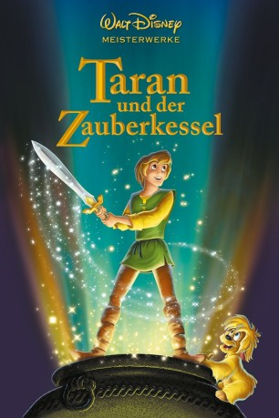

#4457 Taran und der Zauberkessel
Alternativ: The Black Cauldron
 
 IMDB-Wertung: 6.5 / 10
IMDB-Wertung: 6.5 / 10  Metascore: 0
Metascore: 0 
Taran träumt davon, ein ruhmreicher Krieger zu sein. Bald erhält der Schweinehirte eine Chance, sich zu beweisen. Er muss einen bösen König besiegen, der die Welt zu unterjochen versucht. Bei seinen gefährlichen Abenteuern stehen ihm ein magisches Zauberschwert, die liebreizende Prinzessin Eilonwy und ein putziges Schweinchen mit übersinnlichen Fähigkeiten zur Seite.
Jahr: 1985
Dauer: 76 Minuten
FSK: 6
Land: USA Studio: Buena Vista Distribution Co., Inc.Tonspuren: DD5.1 - ,
Untertitel:
Auflösung: 720p (1280x720) Größe: 2109 MB
Genre: Action, Horror, Abenteuer, Fantasy, Animation/Trick, Familie
Regisseur: Ted Berman, Richard Rich
Drehbuch: Robert B. Parker
Soundtrack:
Darsteller:
 Freddie Jones als Dallben
Freddie Jones als Dallben Nigel Hawthorne als Fflewddur Fflam
Nigel Hawthorne als Fflewddur Fflam Arthur Malet als King Eidilleg
Arthur Malet als King Eidilleg- John Byner als Gurgi / Doli
- Brandon Call als Fairfolk
- Phil Fondacaro als Creeper / Henchman
 Wayne Allwine als Henchman
Wayne Allwine als Henchman John Hurt als The Horned King
John Hurt als The Horned King- Grant Bardsley als Taran
- Susan Sheridan als Eilonwy
- Lindsay Rich als Fairfolk
- Gregory Levinson als Fairfolk
- Eda Reiss Merin als Orddu
- Adele Malis-Morey als Orwen
- Billie Hayes als Orgoch
 Peter Renaday als Henchman
Peter Renaday als Henchman- James Almanzar als Henchman
- Steve Hale als Henchman
- Phil Nibbelink als Henchman
- Jack Laing als Henchman
Datei: X:\Kinder Disney HD\1900-1999\Taran und der Zauberkessel (1985, FSK6, 1280x720).mkv seit 21.09.2016
Festplatte: Kinder-Filme+Trick
 Es gibt insgesamt 16 Filme in der Gruppe 'Kinder Disney HD\1900-1999'
Es gibt insgesamt 16 Filme in der Gruppe 'Kinder Disney HD\1900-1999'